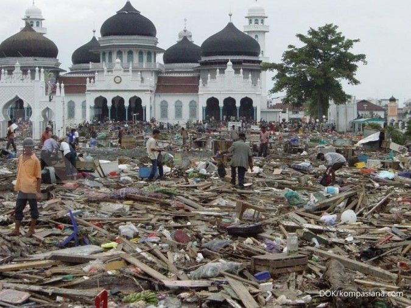
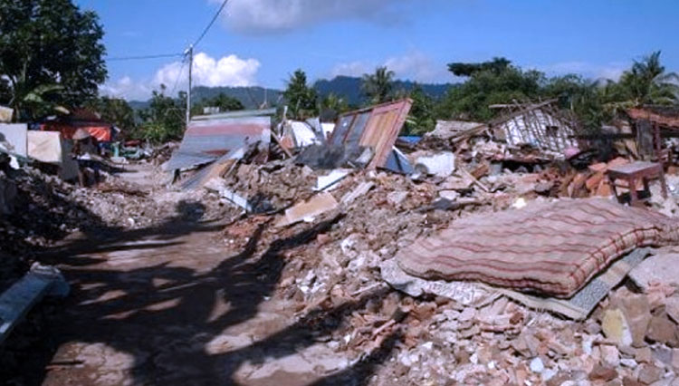

Letusan Gunung Merapi terlihat dari kejauhan. (Foto: Antara)
Yogyakarta (ANTARA) - Gunung Merapi di perbatasan Jawa Tengah (Jateng) dan Daerah Istimewa Yogyakarta (DIY) pada Kamis meluncurkan guguran lava sebanyak 15 kali dengan jarak luncur maksimum 1,8 kilometer.
Kepala BPPTKG Yogyakarta Agus Budi Santoso dalam keterangan di Yogyakarta, Kamis, menjelaskan berdasarkan pengamatan pukul 00.00 hingga 06.00 WIB, guguran lava itu meluncur ke arah Kali Bebeng.
"Teramati 15 kali guguran lava ke arah barat daya (Kali Bebeng) dengan jarak luncur maksimum 1.800 meter," kata dia.
Selama periode pengamatan itu, Gunung Merapi juga mengalami 21 kali gempa guguran dengan amplitudo 3-34 mm selama 69.84-180.4 detik dan dua kali gempa fase banyak dengan amplitudo 3-5 mm selama 5.8-5.92 detik.
Pada periode pengamatan Rabu (1/5) pukul 00.00-24.00 WIB, Gunung Merapi juga tercatat enam kali meluncurkan guguran lava ke arah Kali Bebeng dengan jarak luncur maksimum 1.700 meter.
Laporan BPPTKG periode 19-25 April 2024, morfologi kubah barat daya Gunung Merapi teramati adanya perubahan akibat aktivitas guguran lava, sedangkan untuk morfologi kubah tengah relatif tetap.
Berdasarkan analisis foto udara tanggal 30 Maret 2024, volume kubah barat daya terukur sebesar 2.054.600 meter kubik dan kubah tengah sebesar 2.358.200 meter kubik.
Agus menyatakan hingga saat ini BPPTKG masih mempertahankan status Gunung Merapi pada Level III atau Siaga.
Untuk mengantisipasi potensi bahaya erupsi Gunung Merapi, BPPTKG mengimbau masyarakat agar tidak melakukan kegiatan apapun di daerah potensi bahaya.
Guguran lava dan awan panas dari Gunung Merapi bisa berdampak ke area dalam sektor selatan-barat daya yang meliputi Sungai Boyong (sejauh maksimal lima kilometer) serta Sungai Bedog, Krasak, dan Bebeng (sejauh maksimal tujuh kilometer).
Pada sektor tenggara meliputi Sungai Woro sejauh maksimal tiga kilometer dan Sungai Gendol lima kilometer. Sedangkan lontaran material vulkanik bila terjadi letusan eksplosif dapat menjangkau radius tiga kilometer dari puncak.
Tragedi Pesawat AirAsia QZ8501 Jatuh di Selat Karimata
| Kategori: Transportasi
Tim SAR mencari puing-puing AirAsia QZ8501. (Sumber: Wikipedia)
Pesawat itu lepas landas dari Banda Udara Internasional Juanda, Surabaya, Indonesia, pukul 05.35 WIB dan hendak menuju Bandar Udara Internasional Changi Singapura, yang dijadwalkan tiba pada pukul 08.30.
Menurut pernyataan AirAsia, kehilangan kontak terjadi pada pukul 07.24 WIB. Namun, beberapa laporan dari otoritas penerbangan Indonesia menyatakan bahwa kehilangan kontak terjadi lebih awal, yaitu 06.17 WIB.
Pesawat itu berada di bawah kontrol lalu lintas udara Indonesia ketika diminta untuk menyimpang dari jalur penerbangan aslinya karena kondisi cuaca yang saat itu sedang buruk.
Pilot Kapten Iriyanto meminta izin naik ke ketinggian 38.000 kaki atau 11.600 meter untuk menghindari awan tebal kumulonimbus, tetapi ketinggian final yang ditunjukkan transponder dan disimpan oleh Flightradar24 adalah 32.000 kaki atau 9.750 meter.
Pesawat kehilangan kontak dengan pengatur lalu lintas udara pada pukul 07:24 waktu setempat, saat terbang di atas Laut Jawa antara Kalimantan dan Jawa, pada ketinggian jelajah dan kecepatan normal. Pesawat ini sempat melintasi sebuah badai beberapa menit sebelum hilang.
Tabrakan Maut Kereta di Bintaro, Puluhan Korban
| Kategori: Transportasi
Kerusakan akibat kecelakaan KRL di Bintaro. (Sumber: Wikipedia)
9 Desember 2013, tak sedikitpun firasat buruk dirasakan oleh Dinda Irmawati. Seperti biasa dia melakukan aktivitasnya menggunakan kereta Commuter Line dari Stasiun Pondok Ranji, Tangerang Selatan, Banten menuju Stasiun Tanah Abang, Jakarta Pusat.
Gerbong khusus wanita Commuter Line paling depan menjadi pilihan Dinda saat itu. Meskipun tidak mendapatkan bangku penumpang, dia berdiri sambil memegang gantungan tangan. yang terletak di belakang pintu masinis.
Kereta baru berjalan beberapa menit atau berjarak sekitar 2,5 kilometer dari Stasiun Pondok Ranji. Tiba-tiba kereta yang ditumpangi Dinda menabrak truk tangki Pertamina di perlintasan palang pintu Pondok Betung atau perlintasan nomor 57A, Bintaro
Menurut dia, kejadian yang terjadi sekitar pukul 11.15 WIB tersebut berlangsung begitu cepat. Suara ledakan terdengar jelas dan seketika seluruh penumpang panik.
Lokomotif langsung mengeluarkan asap dan langsung disusul dengan kobaran api. Tangis pun pecah, penumpang yang didominasi perempuan itu langsung menjerit dengan posisi yang berjatuhan.
Sebab akibat kecelakaan hebat itu, kereta itu terguling. Kondisi terparah berada pada kereta khusus perempuan yang ditumpangi Dinda. Beberapa dari mereka terinjak-injak karena ingin menyelamatkan diri.
Beberapa menit kemudian, warga di sekitar lokasi kejadian langsung berlarian untuk menolong korban. Warga juga memaksa untuk membuka pintu dan jendela.
"Allahu akbar, Allahu akbar. Saya nginjek orang dan saya dengar yang di bawah sudah teriak minta tolong," kata Dinda.
Dia menjadi salah satu dari puluhan orang yang menjadi korban kecelakaan tersebut. Sebanyak sembilan orang dinyatakan tewas, termasuk masinis dan korban luka-luka sekitar 80 orang.
Saat kejadian, truk Pertamina yang membawa 24 ribu kilo liter bensin itu terseret sekitar 20 meter dari titik kecelakaan. Suara ledakan pun terdengar berkali-kali dan asap hitam tampak membumbung ke udara.
Tsunami Aceh 2004: Bencana Terbesar dalam Sejarah Modern Indonesia
| Kategori: Bencana

Kerusakan parah di Aceh pasca tsunami 2004. (Foto: US Navy)
Aceh tahun 2004 dan kronologinya selalu menjadi materi yang menarik untuk dipelajari sebagai pengingat akan salah satu bencana alam terparah yang terjadi selama sejarah modern. Hal ini berdasarkan tinjauan dari national Science Foundation (NFS) dengan melihat aspek jumlah korban dan juga aspek geologi
HomeHot
Penyebab Tsunami Aceh 2004, Bencana Alam Terparah Dalam Sejarah Modern
Penyebab Tsunami Aceh pada tahun 2004 adalah karena gempa tektonik, berikut penjelasan dan kronologinya
Woro Anjar VeriantyWoro Anjar Verianty
Diperbarui 15 Agu 2022, 16:45 WIB
Copy Link
12
Masjid yang masih berdiri ditempa tsunami di Aceh.
Perbesar
Masjid yang masih berdiri ditempa tsunami di Aceh. (foto: ABC.net)
Liputan6.com, Jakarta Penyebab tsunami Aceh tahun 2004 dan kronologinya selalu menjadi materi yang menarik untuk dipelajari sebagai pengingat akan salah satu bencana alam terparah yang terjadi selama sejarah modern. Hal ini berdasarkan tinjauan dari national Science Foundation (NFS) dengan melihat aspek jumlah korban dan juga aspek geologi.
Advertisement
Singkirkan hipertensi dan sakit kepala. Bersihkan wadahnya!
Singkirkan hipertensi dan sakit kepala. Bersihkan wadahnya!
Pelajari Lebih
Penyebab tsunami Aceh tahun 2004 sendiri diketahui dipicu oleh adanya gempa tektonik yang juga merupakan gempa terbesar ketiga yang pernah tercatat di dunia dan memiliki patahan lempeng terpanjang yang pernah diamati oleh para peneliti.
Gempa tektonik pada Samudra Hindia ini menyebabkan gempa dengan kekuatan magnitude 9.2 skala richter dan tsunami setinggi 15 meter atau 50 kaki yang kemudian menerjang daratan aceh dan meluluhlantahkannya. Bencana ini juga meninggalkan bekas luka yang dalam untuk para penduduk yang tinggal di Desa Gampong di Ulee Lheue, Banda Aceh.
Dipicu oleh pergerakan dua lempeng bumi yang terletak di Samudra Hindia, berikut ini Liputan6.com tangkum dari berbagai sumber, Senin (15/8/2022) tentang kronologi dan penyebab Tsunami Aceh serta fakta yang menyertainya.
Gempa Jogja 2006: Ribuan Rumah Runtuh, Ribuan Jiwa Hilang
| Kategori: Bencana

Salah satu rumah warga yang roboh akibat gempa Jogja 2006. (Sumber: Wikipedia)
Gempa yang terjadi di wilayah perairan Kabupaten Bantul, Yogyakarta telah mengakibatkan kerusakan yang cukup parah. Badan Penanggulangan Bencana Daerah (BPBD) Bantul yang dilansir dari VIVA, gempa yang terjadi pada tanggal 27 Mei 2006 ini terjadi sekitar pada pukul 05.54 WIB. Gempa yang berkekuatan 5,9 sekala richter ini mengguncang bumi Yogyakarta selama 57 detik. 2.Banyak korban dalam kejadian ini Akibat dari gempa tersebut, banyak korban jiwa maupun bangunan yang roboh rata dengan tanah juga mengalami kerusakan, khususnya di daerah Bantul, Yogyakarta. Jumlah korban yang meninggal di wilayah Bantul ada 4.143 orang, dengan ribuan rumah yang rusak.
Artikel ini sudah tayang di tvonenews.com pada hari Jumat, 27 Mei 2022 - 21:56 WIB
Judul Artikel : 16 Tahun Berlalu, Ini 5 Fakta Tentang Gempa Bantul 27 Mei 2006 Lalu
Link Artikel : https://www.tvonenews.com/daerah/yogyakarta/43270-16-tahun-berlalu-ini-5-fakta-tentang-gempa-bantul-27-mei-2006-lalu
Oleh : Reporter : Tim TvOne Editor : Karina M Ramadhani